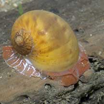
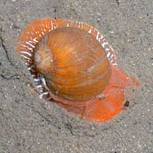
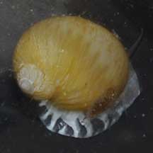
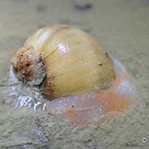
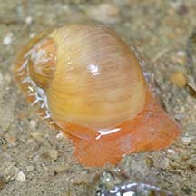
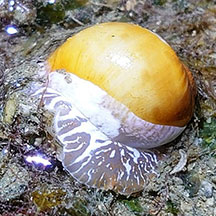
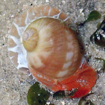
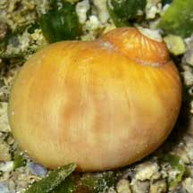
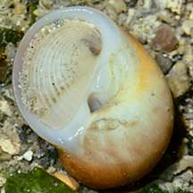

|
|
| shelled snails text index | photo index |
| Phylum Mollusca > Class Gastropoda > Family Naticidae |
| Pink
moon snail Naticarius zonalis Family Naticidae updated Aug 2020 Where seen? This moon snail with a pretty pink and white body is sometimes encountered on some of our shores near and among seagrass meadows. Features: 2-3cm. Shell smooth thick spherical (not flat) with the spiral tip sticking out a little. Shell pattern plain orangey brown sometimes with smudged bars and faded stripes near the spiral. On the underside, a shallow depression. Operculum plain pearly white (no markings), with several fine grooves. Foot transparent with a white margin and a pattern of white bars and red spots, front part of the body densely covered with tiny orangey pink spots. Tentacles short, pink or orange. |
 Changi, Jul 06 |
 |
 Changi, Jul 06 |
| Moon on the hunt: One was seen clasping a bivalve in its foot above ground. |
 With a bivalve enveloped in its foot. Changi, Aug 12 |
 A tiny one (about 1cm). Labrador, Sep 09 |
| Pink moon snails on Singapore shores |
On wildsingapore
flickr
|
| Other sightings on Singapore shores |
 Changi Lost Coast, Jun 22 Photo shared by Vincent Choo on facebook. |
 East Coast Park (PCN), Aug 22 Photo shared by James Koh on facebook. |
 Kusu Island, Sep 23 Photo shared by Richard Kuah on facebook. |
 Cyrene, Jul 25 Photo shared by Chay Hoon on facebook. |
 Terumbu Pempang Laut, Aug 21  Photo shared by Toh Chay Hoon on facebook. |
References
|